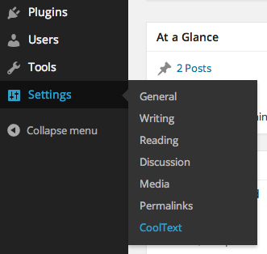

Below you can find the CoolText documentation.
Created: February 2014
By: Thomas Dolso
Website: www.megalocode.com/cooltext-wordpress
CoolText already comes with 300 ready-to-use animations. There are basically three types of animations:
IN: fading a text from opacity 0 to 1
OUT: fading a text from opacity 1 to 0
MID: opacity not affected
Take a look at all the available animations.
Once you have downloaded CoolText go to the Plugins tab in your WordPress Administration and click “Add New”. Then click “Upload” and select the zip file that you have downloaded from CodeCanyon. Once uploaded you have to active it. That's it!
If you prefer to manually install CoolText plugin, please follow these steps:
1. Unzip the downloaded archive
2. Upload the folder cooltext to your /wp-content/plugins/ directory
3. Activate the plugin from Plugins > CoolText > Activate, under WordPress admin interface
You can use CoolText in two ways. Let's start with the simplest one, shortcodes. If you want to animate a text inside your post content, title and so on, you have to enclose your text inside a shortcode. Below you can find the structure of the CoolText shortcodes with all the available parameters:
[cooltext sequence="" separator="" mouseover="" mouseout="" click="" settings=""]your text[/cooltext]
sequence: the animation sequence you want to perform
separator: used to create a text rotation
mouseover: the animation to perform on mouse over
mouseout: the animation to perform on mouse out
click: the animation to perform on click
settings: CoolText settings
Inside the sequence parameter you can specify one or more animations you want to perform, separated by commas. The following example starts the animations called cool15 when the page is shown.
[cooltext sequence="cool15"]your text[/cooltext]
If you want to create an animation sequence you have to specify the animations separated by commas. Here is an example that starts with the IN animation cool15 (the text is shown with a fade in effect), followed by a MID animation cool162 and then by a OUT animation cool278 (the text is hided with a fade out effect):
[cooltext sequence="cool15,cool162,cool278"]your text[/cooltext]
In the above examples we used the default animation settings. But CoolText allows you to control the behavior of each animation. The parameters you can use are the following:
| Parameter | Available values | Default value | Description |
|---|---|---|---|
| animation | an animation name | - | the animation name. See all the available animations |
| elements | "letters", "words" | "letters" | use it to tell CoolText to animate letters or words |
| speed | an integer from 1 to infinite | 100 | use this percentage to set the animation speed |
| stagger | an integer from 1 to infinite | 100 | use this percentage to set the delay between elements (letters or words) |
| delay | seconds | 0 | the number of seconds to wait before the animation will start |
| order | "forward", "reverse", "random" | "forward" | order in which the elements (letters or words) will be animated |
| color | css color | - | if used, CoolText change the text color during the animation |
You can use the above parameters inside the sequence parameter, separated by "-".
NOTE: The above parameters have to be used in a precise order. Only the first one, animation is required, the others are optional. The correct order is: animation-elements-speed-stagger-delay-order-color. So, if for example you want to set the stagger, you have also to set elements and speed.
Here is an example that animates words with a speed of 150% (faster than default) and with less delay between elements. Then, after 2 seconds, the animation cool162 is executed on letters with a speed of 130% and a stagger of 170%, in a reverse order, and during the animation the letters become yellow.
[cooltext sequence="cool15-words-150-130,cool162-letters-130-170-2-reverse-yellow"]your text[/cooltext]
CoolText allows you to create a text rotation simply specifying a separator. Here is an example:
[cooltext sequence="cool15,cool162,cool231" separator="-"]text1-text2-text3[/cooltext]
In the above example text1 are shown with the animation sequence cool15,cool162,cool231, then text2 are shown with the same sequence and finally text3.
CoolText allows you to set animations to perform on mouseover, mouseout and mouseclick. The following example shows how to set different animations to the three mouse events.
[cooltext mouseover="cool172" mouseout="cool130" click="cool147"]your text[/cooltext]
As described above, you can specify the settings for speed, stagger, etc. with the same syntax. Here is an example:
[cooltext mouseover="cool172-words-150-200-0-random"]your text[/cooltext]
You can also start an animation when the text become visible (while scrolling the page). Here is an example:
[cooltext visible="cool12"]your text[/cooltext]
If your text is visible when the page is loaded, the animation starts immediately.
There are some settings you can specify. Here they are:
cycle: if specified, the sequence will be cyclic
antialias: sometimes (depends on the font you use) it improves text readability
waitforload: if specified, CoolText waits for document load before start
You can specify these settings with the settings parameters. as shown in the following example:
[cooltext sequence="cool15,cool162,cool231" separator="-" settings="cycle,antialias"]text1-text2-text3[/cooltext]
The above example performs a cyclic text rotation, applying the antialias to the text.
 CoolText can also be used through the Wordpress Settings section. This is a powerful way to use CoolText because it allows you to add animations to any element of your website, using jQuery selectors. To do that you have to understand how thw jQuery selector engine works. Here you can find the official documentation. Below you can find some examples. Go to Settings / CoolText in your Wordpress admin area. Here you can add as many behaviors you want. Click the Add New button and specify a Selector and a Behavior.
A Selector is a string used by jQuery to retrieve elements inside your page. For example:
a: all the links (<a>)
h1.myclass: all the h1 tags with myclass class (<h1 class="myclass">)
#elementid: an element with elementid id (<div id="elementid">)
The Behavior has exactly the same syntax included in the left part of the shortcode. Here is an example:
sequence="cool15,cool162,cool231" separator="-" settings="cycle,antialias"
Here are some example you could use in your Wordpress website, based on the Twenty Fourteen theme.
Add a mouse over effect to each navigation menu items
Selector: .nav-menu a
Behavior: mouseover="cool170"
Wait for page load and then show each post title with an animation
Selector: h1.entry-title
Behavior: sequence="cool77" settings="waitforload"
Show each recent post (on the left) with an animation and set a mouse over effect for each item
Selector: .widget_recent_entries a
Behavior: sequence="cool1" mouseover="cool103"